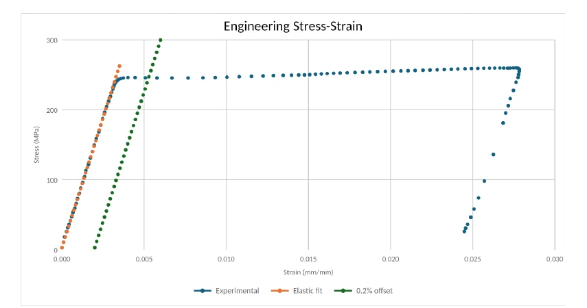

COMPUTATIONAL METHODS / FALL 2026
Computational Methods
Individual MATLAB coursework demonstrating numerical models, experimental-data processing, and critical result checking.
SELECTED COURSEWORK
Writing MATLAB code to solve and check engineering problems.
These are individual coursework examples, not independent commercial projects. They demonstrate how I turn governing equations and measured data into calculations, evaluate the results, and recognize model limitations.
01 / DYNAMICS MODELING
Building a parachute simulation
I implemented an explicit Euler model for a high-altitude parachute jump, accounting for changing air density, gravity, drag, wind, and deployment.
My calculation predicted a landing time of 406.23 seconds, compared with 553 seconds in the reference footage. That discrepancy was a useful reminder to question missing physics and assumptions instead of treating code output as automatically accurate.

02 / TEST DATA
Turning measurements into material properties
I processed tensile-test load and elongation data into engineering stress-strain curves, used an elastic-region fit to estimate modulus, and applied numerical differentiation and integration.
When I found conflicting specimen dimensions in the assignment materials, I recognized that the assumed cross-section affected the modulus calculation. The useful skill here was checking inputs and uncertainty rather than promoting a questionable final number.


03 / NUMERICAL METHODS
Checking solutions, not just calculating them
I used Fourier analysis to identify frequency content in a sampled engine signal and implemented bisection, Newton's method, Jacobi, and Gauss-Seidel methods in coursework.
Across these assignments, I practiced checking convergence, residuals, and whether a computed result made physical sense.
Simulation, data analysis, and iterative solvers
Examples of MATLAB-based engineering coursework rather than separate full-scale design projects.
WHAT THIS SHOWS
Computing skills backed by critical evaluation.
Implemented numerical models and processed experimental engineering data.
Checked approximations and assumptions rather than accepting every computed value at face value.